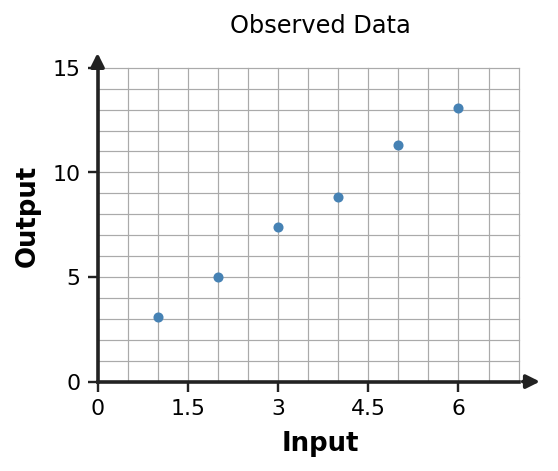

Algebra 1 · Unit 2 · Section 2.5 · Investigation
Line of Fit Investigation
Linear Modeling with Data
Learning Target: Students will use linear models to represent and interpret real-world data.
Directions
- Work with a partner unless your teacher assigns a different grouping.
- Show the evidence you use, not only the final answer.
- When a representation changes, keep the meaning of the quantities attached to your work.
- Revise an answer if later evidence shows that your first claim was incomplete.
Part 1 · Read the Data
The scatter plot shows a measurement trend. Describe direction, form, and strength in everyday language.

Part 2 · Build a Reasonable Line
Choose two representative points near the trend, estimate a slope and intercept, and write a linear model. Your line does not need to pass through every data point.
Part 3 · Predict and Check
Use your model to predict the output when $x=7$. Then compare that prediction with the overall data pattern. Is it reasonable?
Part 4 · Model Limits
Give one reason the same linear model might become less trustworthy far outside the observed input range.